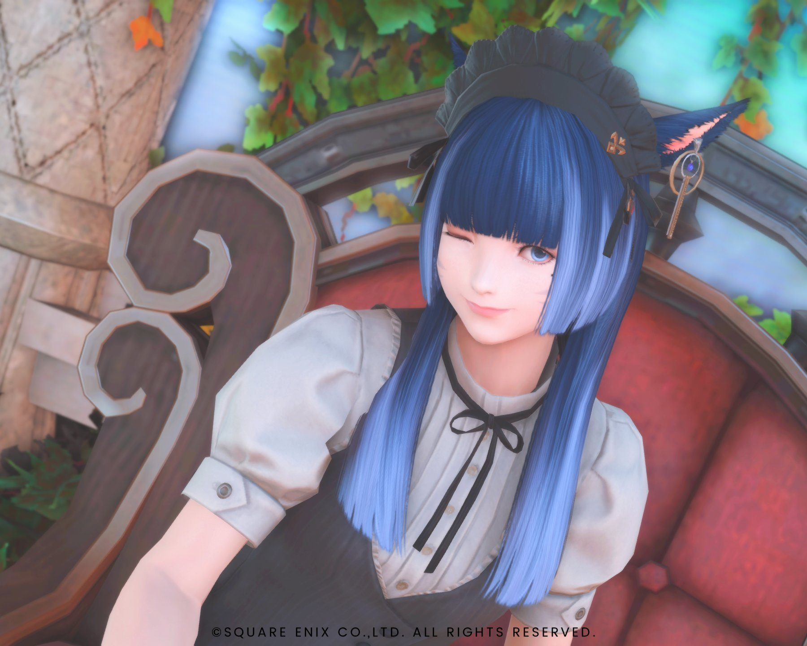
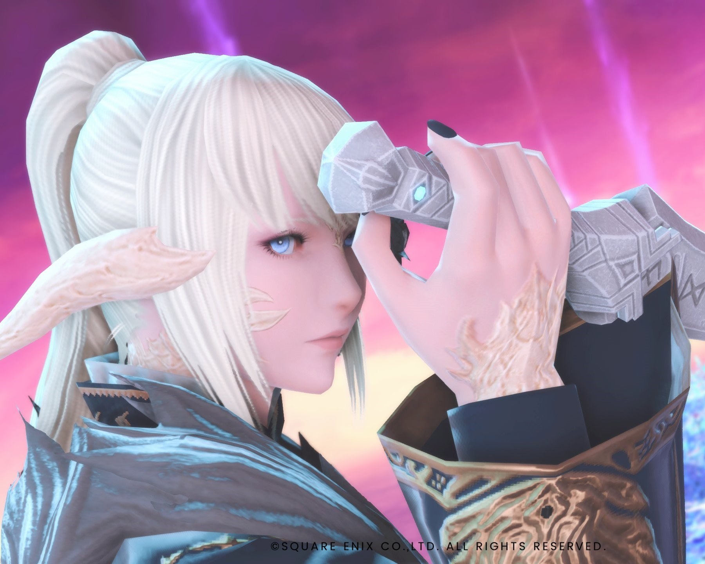

FF14
月乃輝夜 -Kaguya Tsukino-

Yojimbo
3/21
Miqo'te Moonkeeper
Red Mage
楽観的
「だいじょぶだいじょぶ！！」
羽依が飼い猫に魔法をかけて人間に
りあとは羽依を巡ってよく喧嘩するけどなんだかんだ仲良し
人間になったら羽依のお手伝い頑張るぞー！と思っていたが、羽依が相談するのは今まで通りりあだけなのが気に入らない
御園羽依 -Ui Mion-

Ultima
7/4
Aura Raen
Black Mage
超強気
「わたしにできない事は無いわ」
世界を作れるほどの大魔法使い
だけど天然ポンコツな一面も
これだと決めたら突っ走ってしまう
輝夜とりあの喧嘩に気づいたことがない
璃空 -Ria-

Yojimbo
12/29
Aura Raen
Astrologian
頭がいいけど自信が無い
「え〜...どうしましょう...」
頑固 冷静
羽依のストッパー
輝夜が猫の時と同じ距離感でういに接するため、若干ムッとしているが、可愛いので許す
忍者として陰で羽依の警護もしている